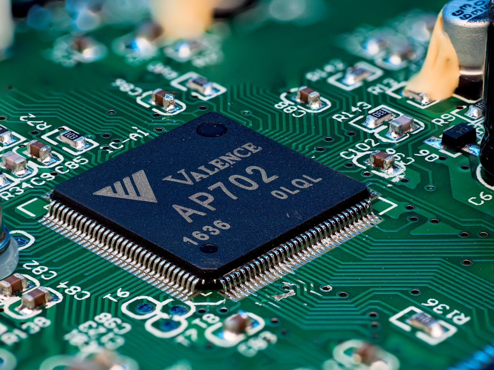

<section style="background-color: #f2f3f7; background-image: linear-gradient(rgba(0,0,0,0.045) 1px, transparent 1px), linear-gradient(90deg, rgba(0,0,0,0.045) 1px, transparent 1px); background-size: 28px 28px; padding: 32px 16px; font-family: -apple-system, BlinkMacSystemFont, 'Segoe UI', Roboto, 'Helvetica Neue', Arial, sans-serif; line-height: 1.7; color: #3a3f4a;">
<section style="max-width: 680px; margin: 0 auto; padding: 0;">
<section style="margin-bottom: 20px; border-radius: 8px; overflow: hidden;"></section>
<section style="text-align: center; margin-bottom: 28px; padding: 28px 20px 24px 20px;">
<p style="display: inline-block; font-size: 11px; color: #3a7abf; letter-spacing: 3px; font-weight: 600; margin: 0 0 10px 0; padding: 3px 14px; border: 1px solid #c0d5ea; border-radius: 20px; background-color: #edf2f8;">AI DAILY</p>
<h1 style="font-size: 22px; color: #1a1e28; margin: 0 0 6px 0; font-weight: 600;">AI 行业日报</h1>
<p style="font-size: 12px; color: #9aa0ae; margin: 0;">2026-04-10 · 精选 8 条</p>
</section>

<section style="margin-bottom: 18px; border-radius: 10px; overflow: hidden; background-color: rgba(255,255,255,0.4); border: 1px solid #e0e3ea; border-top: 3px solid #3a7abf;">
<section style="padding: 20px 22px 16px 22px;"><p style="margin: 0 0 8px 0;"><span style="font-size: 22px; font-weight: 700; color: #3a7abf; letter-spacing: 1px;">01</span><span style="display: inline-block; font-size: 11px; color: #3a7abf; background-color: #edf2f8; padding: 2px 8px; border-radius: 3px; margin-left: 10px; vertical-align: top; margin-top: 5px;">产品发布</span></p><h3 style="margin: 0 0 16px 0; color: #1a1e28; font-size: 17px; font-weight: 600; line-height: 1.4;">OpenAI 上线每月 100 美元订阅方案：为开发者而生，正面对决 Claude Code</h3></section>
<section style="padding: 0 22px 4px 22px;"></section>
<section style="padding: 16px 22px;"><section style="border-left: 3px solid #3a7abf; padding-left: 14px; margin-bottom: 10px;"><p style="margin: 0; line-height: 1.75; color: #4a5060; font-size: 14px;">4 月 10 日凌晨，<strong>OpenAI</strong> 推出每月 <strong>100 美元</strong> 的 Pro 5x 档位，补上 20 美元 Plus 和 200 美元 Pro 之间的空档，目标就是高频写代码的人。</p></section><section style="border-left: 3px solid #c8d5e5; padding-left: 14px;"><p style="margin: 0; line-height: 1.75; color: #4a5060; font-size: 14px;">新档位给到约 <strong>5 倍 Codex 额度</strong>，官方还说截至 <strong>5 月 31 日</strong> 会有额外提升。OpenAI 披露，Codex 周活已经超过 <strong>300 万</strong>。</p></section></section>
<section style="padding: 14px 20px 16px 20px; margin: 0 22px 18px 22px; background-color: rgba(225,235,248,0.85); border-radius: 8px;"><p style="margin: 0 0 3px 0; font-size: 10px; color: #3a7abf; font-weight: 600; letter-spacing: 2px;">INSIGHT</p><p style="margin: 0; font-size: 13px; line-height: 1.75; color: #4a5a70;">价格不是重点。重点是 OpenAI 开始把<strong>“写代码”单独拎出来做生意</strong>。20 美元守住轻用户，100 美元去抢重度开发者，200 美元继续往团队协作和高负载场景上抬。</p></section>
</section>

<section style="margin-bottom: 18px; border-radius: 10px; overflow: hidden; background-color: rgba(255,255,255,0.4); border: 1px solid #e0e3ea; border-top: 3px solid #3a7abf;">
<section style="padding: 20px 22px 16px 22px;"><p style="margin: 0 0 8px 0;"><span style="font-size: 22px; font-weight: 700; color: #3a7abf; letter-spacing: 1px;">02</span><span style="display: inline-block; font-size: 11px; color: #3a7abf; background-color: #edf2f8; padding: 2px 8px; border-radius: 3px; margin-left: 10px; vertical-align: top; margin-top: 5px;">技术突破</span></p><h3 style="margin: 0 0 16px 0; color: #1a1e28; font-size: 17px; font-weight: 600; line-height: 1.4;">字节推出原生全双工语音大模型 Seeduplex</h3></section>
<section style="padding: 0 22px 4px 22px;"></section>
<section style="padding: 16px 22px;"><section style="border-left: 3px solid #3a7abf; padding-left: 14px; margin-bottom: 10px;"><p style="margin: 0; line-height: 1.75; color: #4a5060; font-size: 14px;">字节 Seed 正式发布原生全双工语音大模型 <strong>Seeduplex</strong>，并已经在 <strong>豆包 App</strong> 全量上线。它不再等用户一句说完再回，而是边听边说。</p></section><section style="border-left: 3px solid #c8d5e5; padding-left: 14px;"><p style="margin: 0; line-height: 1.75; color: #4a5060; font-size: 14px;">官方给出的指标很硬：<strong>误回复率和误打断率减半</strong>，<strong>抢话比例下降 40%</strong>，判停和打断响应分别缩短约 <strong>250ms</strong> 和 <strong>300ms</strong>。</p></section></section>
<section style="padding: 14px 20px 16px 20px; margin: 0 22px 18px 22px; background-color: rgba(225,235,248,0.85); border-radius: 8px;"><p style="margin: 0 0 3px 0; font-size: 10px; color: #3a7abf; font-weight: 600; letter-spacing: 2px;">INSIGHT</p><p style="margin: 0; font-size: 13px; line-height: 1.75; color: #4a5a70;">语音助手真正难的，不是会不会说，而是<strong>别抢话</strong>。字节这次盯住的是通话体验本身。谁先把这件事做顺，电话、客服、耳机、车机这些入口都会被重新定义。</p></section>
</section>

<section style="margin-bottom: 18px; border-radius: 10px; overflow: hidden; background-color: rgba(255,255,255,0.4); border: 1px solid #e0e3ea; border-top: 3px solid #3a7abf;">
<section style="padding: 20px 22px 16px 22px;"><p style="margin: 0 0 8px 0;"><span style="font-size: 22px; font-weight: 700; color: #3a7abf; letter-spacing: 1px;">03</span><span style="display: inline-block; font-size: 11px; color: #3a7abf; background-color: #edf2f8; padding: 2px 8px; border-radius: 3px; margin-left: 10px; vertical-align: top; margin-top: 5px;">行业动态</span></p><h3 style="margin: 0 0 16px 0; color: #1a1e28; font-size: 17px; font-weight: 600; line-height: 1.4;">消息称 Anthropic 计划自研 AI 芯片：自己动手应对“缺芯”</h3></section>
<section style="padding: 0 22px 4px 22px;"></section>
<section style="padding: 16px 22px;"><section style="border-left: 3px solid #3a7abf; padding-left: 14px; margin-bottom: 10px;"><p style="margin: 0; line-height: 1.75; color: #4a5060; font-size: 14px;">路透消息称，<strong>Anthropic</strong> 正在评估自研 AI 芯片的可行性，想在高端 AI 芯片持续紧张的背景下，把训练和推理主动权往自己手里再收一点。</p></section><section style="border-left: 3px solid #c8d5e5; padding-left: 14px;"><p style="margin: 0; line-height: 1.75; color: #4a5060; font-size: 14px;">现阶段它仍主要依赖 <strong>Google TPU</strong>、AWS Trainium 和 Nvidia GPU。Broadcom 披露的新协议会在 <strong>2027 年</strong> 给它带来约 <strong>3.5 吉瓦</strong> Google 算力。</p></section></section>
<section style="padding: 14px 20px 16px 20px; margin: 0 22px 18px 22px; background-color: rgba(225,235,248,0.85); border-radius: 8px;"><p style="margin: 0 0 3px 0; font-size: 10px; color: #3a7abf; font-weight: 600; letter-spacing: 2px;">INSIGHT</p><p style="margin: 0; font-size: 13px; line-height: 1.75; color: #4a5a70;">这不是一家模型公司突然想学做芯片，而是头部模型公司开始把<strong>算力看成产品本身的一部分</strong>。模型再强，只要命门还在别人机房里，议价权就不会完整。</p></section>
</section>

<section style="margin-bottom: 28px; border: 1px solid #e5e5e5; border-radius: 6px; overflow: hidden; box-shadow: 0 1px 3px rgba(0,0,0,0.06);">
<section style="background-color: #2c2c2c; padding: 14px 18px;"><h3 style="margin: 0; color: #fff; font-size: 17px; font-weight: 600; line-height: 1.4; text-indent: 0 !important;">04. 阿里云百炼上线Agent记忆库，让「龙虾」应用更懂用户</h3><p style="margin: 6px 0 0 0; color: #999; font-size: 12px; text-indent: 0 !important;">量子位 · 04-09</p></section>
<section style="padding: 18px; background-color: rgba(255,255,255,0.4);"><p style="margin: 0 0 14px 0; line-height: 1.7; color: #333; font-size: 15px; text-indent: 0 !important;">阿里云百炼上线 <strong>Agent 记忆库</strong>，给 Agent 补上提取、存储、检索、注入四个环节，让它能跨会话记住用户偏好、日程和历史任务。</p><p style="margin: 0; line-height: 1.7; color: #333; font-size: 15px; text-indent: 0 !important;">百炼给出的数据是：<strong>记忆搜索判定平均 RT 下降 50%</strong>，日期相关性提升 <strong>66%</strong>，内容相关性提升 <strong>39%</strong>。这项能力现在限时免费，也能通过 API 接到别的 Agent 应用里。</p></section>
<section style="padding: 14px 18px; background-color: rgba(225,235,248,0.85); border-top: 2px solid #ff6b35;"><p style="margin: 0; font-size: 14px; line-height: 1.7; color: #444; text-indent: 0 !important;"><strong style="color: #ff6b35;">💡 短评：</strong>今年 Agent 卷到后面，拼的不会只是会不会调工具，而是能不能把<strong>同一个用户越用越懂</strong>。记忆一旦做成基础设施，中间层产品很快就会被拉开体验差距。</p></section>
</section>

<section style="margin-bottom: 28px; border: 1px solid #e5e5e5; border-radius: 6px; overflow: hidden; box-shadow: 0 1px 3px rgba(0,0,0,0.06);">
<section style="background-color: #2c2c2c; padding: 14px 18px;"><h3 style="margin: 0; color: #fff; font-size: 17px; font-weight: 600; line-height: 1.4; text-indent: 0 !important;">05. Meta亿元天团首个大模型交卷！余家辉宋飏Jason Wei耗时九个月，一雪Llama前耻</h3><p style="margin: 6px 0 0 0; color: #999; font-size: 12px; text-indent: 0 !important;">量子位 · 04-09</p></section>
<section style="padding: 18px; background-color: rgba(255,255,255,0.4);"><p style="margin: 0 0 14px 0; line-height: 1.7; color: #333; font-size: 15px; text-indent: 0 !important;">Meta 发布超级智能实验室第一款模型 <strong>Muse Spark</strong>，主打原生多模态、工具调用和多 Agent 协作，已经上线 <strong>Meta AI</strong> 和 Meta AI App。</p><p style="margin: 0; line-height: 1.7; color: #333; font-size: 15px; text-indent: 0 !important;">官方称它在 <strong>HealthBench Hard 拿到 42.8 分</strong>，并和 <strong>1000 多名医生</strong> 一起构建训练数据；新预训练堆栈达到同等能力所需算力，比 Llama 4 Maverick 低一个数量级以上。</p></section>
<section style="padding: 14px 18px; background-color: rgba(225,235,248,0.85); border-top: 2px solid #ff6b35;"><p style="margin: 0; font-size: 14px; line-height: 1.7; color: #444; text-indent: 0 !important;"><strong style="color: #ff6b35;">💡 短评：</strong>Meta 这次先补的，其实是<strong>回到牌桌的资格</strong>。它不再急着谈开源路线，而是先证明自己还有从零重起一套前沿模型栈的能力。对 Meta 来说，这比单次 benchmark 更值钱。</p></section>
</section>

<section style="margin-bottom: 18px; border-radius: 10px; overflow: hidden; background-color: rgba(255,255,255,0.4); border: 1px solid #e0e3ea; border-top: 3px solid #3a7abf;">
<section style="padding: 20px 22px 16px 22px;"><p style="margin: 0 0 8px 0;"><span style="font-size: 22px; font-weight: 700; color: #3a7abf; letter-spacing: 1px;">06</span><span style="display: inline-block; font-size: 11px; color: #3a7abf; background-color: #edf2f8; padding: 2px 8px; border-radius: 3px; margin-left: 10px; vertical-align: top; margin-top: 5px;">技术突破</span></p><h3 style="margin: 0 0 16px 0; color: #1a1e28; font-size: 17px; font-weight: 600; line-height: 1.4;">智元发布 GO-2 基座模型</h3></section>
<section style="padding: 0 22px 4px 22px;"></section>
<section style="padding: 16px 22px;"><section style="border-left: 3px solid #3a7abf; padding-left: 14px; margin-bottom: 10px;"><p style="margin: 0; line-height: 1.75; color: #4a5060; font-size: 14px;">智元推出具身基座模型 <strong>GO-2</strong>，把动作思维链和异步双系统架构放进统一框架，想解决机器人里最难的一段：从会规划，到能稳定执行。</p></section><section style="border-left: 3px solid #c8d5e5; padding-left: 14px;"><p style="margin: 0; line-height: 1.75; color: #4a5060; font-size: 14px;">官方给出的基准测试里，GO-2 在 <strong>LIBERO</strong> 四类任务上的平均成功率达到 <strong>98.5%</strong>，在 <strong>LIBERO-Plus</strong> 拿到 <strong>86.6%</strong>。</p></section></section>
<section style="padding: 14px 20px 16px 20px; margin: 0 22px 18px 22px; background-color: rgba(225,235,248,0.85); border-radius: 8px;"><p style="margin: 0 0 3px 0; font-size: 10px; color: #3a7abf; font-weight: 600; letter-spacing: 2px;">INSIGHT</p><p style="margin: 0; font-size: 13px; line-height: 1.75; color: #4a5a70;">具身智能现在最缺的不是演示视频，而是从<strong>看懂任务到手别抖</strong>的那一步。GO-2 把动作规划显式化，说明行业开始从堆模型，转向补执行链路。</p></section>
</section>

<section style="margin-bottom: 28px; border: 1px solid #e5e5e5; border-radius: 6px; overflow: hidden; box-shadow: 0 1px 3px rgba(0,0,0,0.06);">
<section style="background-color: #2c2c2c; padding: 14px 18px;"><h3 style="margin: 0; color: #fff; font-size: 17px; font-weight: 600; line-height: 1.4; text-indent: 0 !important;">07. 对话美团GN06刘炯：美团为什么做了一款AI浏览器？</h3><p style="margin: 6px 0 0 0; color: #999; font-size: 12px; text-indent: 0 !important;">36氪 · 04-09</p></section>
<section style="padding: 18px; background-color: rgba(255,255,255,0.4);"><p style="margin: 0 0 14px 0; line-height: 1.7; color: #333; font-size: 15px; text-indent: 0 !important;">美团 GN06 推出 AI 浏览器 <strong>Tabbit</strong> 公测版，路线很明确：不再让普通用户学一套新的 Agent 玩法，而是直接贴在原本就已经打开的网页工作流上。</p><p style="margin: 0; line-height: 1.7; color: #333; font-size: 15px; text-indent: 0 !important;">团队称模型接入保持开放，头部模型厂商占比都没超过 <strong>30%</strong>；目前已经有跨境电商、论文整理和无障碍办公等用户案例，整体留存也过了工具类产品的优良线。</p></section>
<section style="padding: 14px 18px; background-color: rgba(225,235,248,0.85); border-top: 2px solid #ff6b35;"><p style="margin: 0; font-size: 14px; line-height: 1.7; color: #444; text-indent: 0 !important;"><strong style="color: #ff6b35;">💡 短评：</strong>浏览器看起来不性感，但它离真实工作流最近。谁能在<strong>你已经开着的那个标签页</strong>里把活接过去，谁更有机会把 Agent 从演示产品变成日用品。</p></section>
</section>

<section style="margin-bottom: 18px; border-radius: 10px; overflow: hidden; background-color: rgba(255,255,255,0.4); border: 1px solid #e0e3ea; border-top: 3px solid #3a7abf;">
<section style="padding: 20px 22px 16px 22px;"><p style="margin: 0 0 8px 0;"><span style="font-size: 22px; font-weight: 700; color: #3a7abf; letter-spacing: 1px;">08</span><span style="display: inline-block; font-size: 11px; color: #3a7abf; background-color: #edf2f8; padding: 2px 8px; border-radius: 3px; margin-left: 10px; vertical-align: top; margin-top: 5px;">开发者工具</span></p><h3 style="margin: 0 0 16px 0; color: #1a1e28; font-size: 17px; font-weight: 600; line-height: 1.4;">腾讯开源 tRPC-Agent-Python：多范式快速开发 Agent 应用</h3></section>
<section style="padding: 0 22px 4px 22px;"></section>
<section style="padding: 16px 22px;"><section style="border-left: 3px solid #3a7abf; padding-left: 14px; margin-bottom: 10px;"><p style="margin: 0; line-height: 1.75; color: #4a5060; font-size: 14px;">腾讯开源 <strong>tRPC-Agent-Python</strong>，补上 Go 版之后的 Python 路线，直接给出 <strong>Chain / Parallel / Cycle / GraphAgent</strong> 等多种编排方式。</p></section><section style="border-left: 3px solid #c8d5e5; padding-left: 14px;"><p style="margin: 0; line-height: 1.75; color: #4a5060; font-size: 14px;">框架把 <strong>MCP、RAG、Session / Memory、CodeExecutor、FastAPI</strong> 服务化和 <strong>OpenTelemetry</strong> 可观测接在一起，同时支持 Anthropic、OpenAI 和 LiteLLM。</p></section></section>
<section style="padding: 14px 20px 16px 20px; margin: 0 22px 18px 22px; background-color: rgba(225,235,248,0.85); border-radius: 8px;"><p style="margin: 0 0 3px 0; font-size: 10px; color: #3a7abf; font-weight: 600; letter-spacing: 2px;">INSIGHT</p><p style="margin: 0; font-size: 13px; line-height: 1.75; color: #4a5a70;">这类框架真正传出的信号，不是又一个开源项目，而是大厂开始把<strong>内部 Agent 工程经验拆成标准件</strong>往外放。框架越成熟，企业落地就越像搭系统，不像做实验。</p></section>
</section>

<section style="margin-top: 32px; padding: 14px 0; text-align: center;"><p style="font-size: 12px; color: #9aa0ae; margin: 0;">由 Zayen知览 整理 · 构建者视角</p></section>
</section>
</section>
